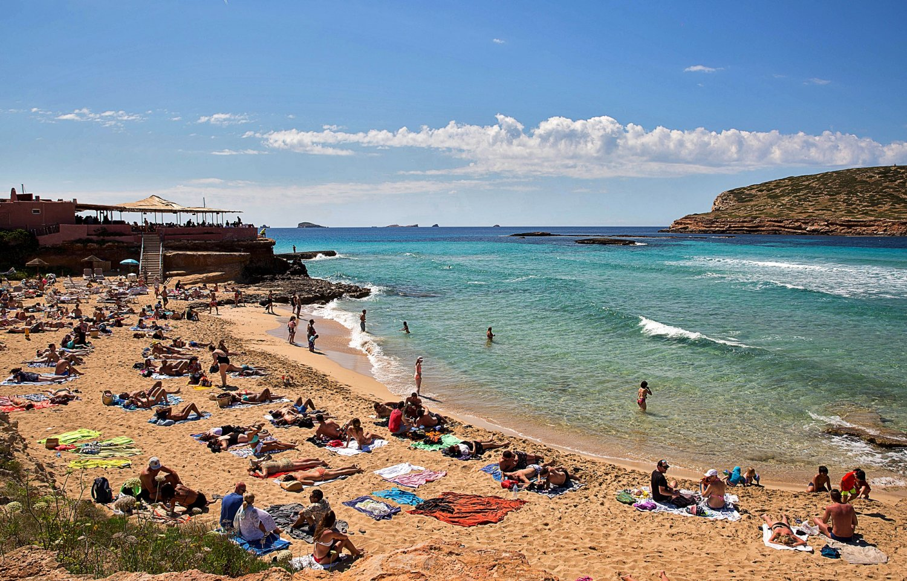
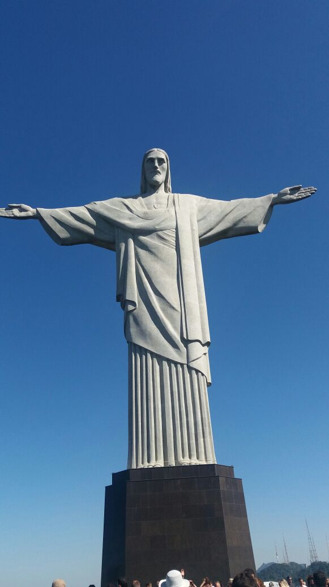

Cancun

Cancun is a coastal city in Mexico known for its Caribbean beaches and resorts.
- Province/State: Quintana Roo
- Country: Mexico
- Population: 934,189 (2020)
- Latitude and longitude: 21.1619 N, 86.8515 W
- Flag:


Ibiza is a Spanish island known for its Mediterranean beaches, clear water, and nightlife.
Cancun is a coastal city in Mexico known for its Caribbean beaches and resorts.

Los Angeles is a large city in California known for Hollywood, entertainment, and beaches.

Rio de Janeiro is a Brazilian city famous for its beaches, Carnival, and Christ the Redeemer.


Mar del Plata is an Argentine beach city known for its Atlantic coast and summer tourism.